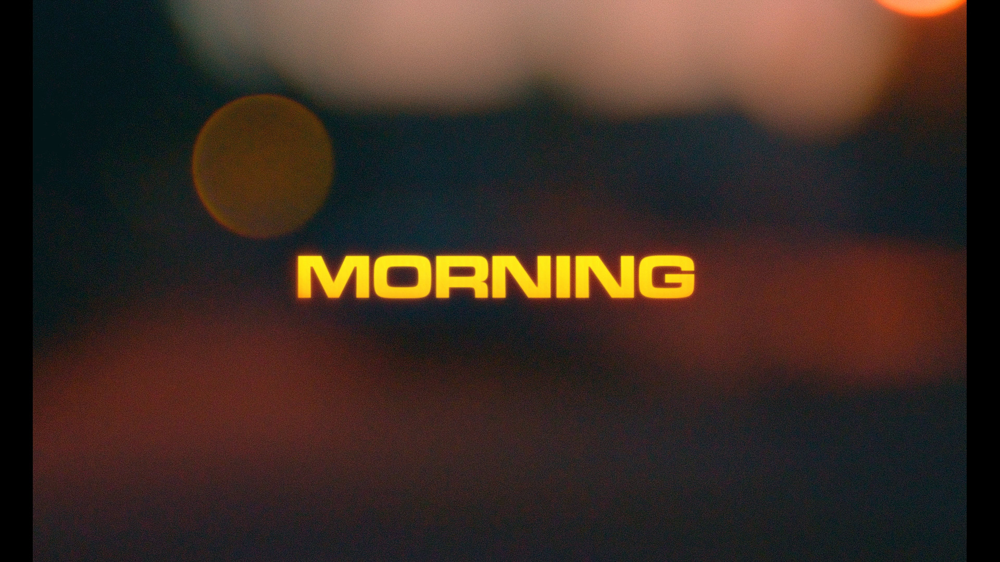
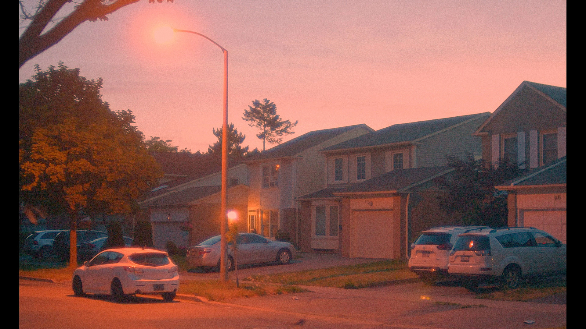
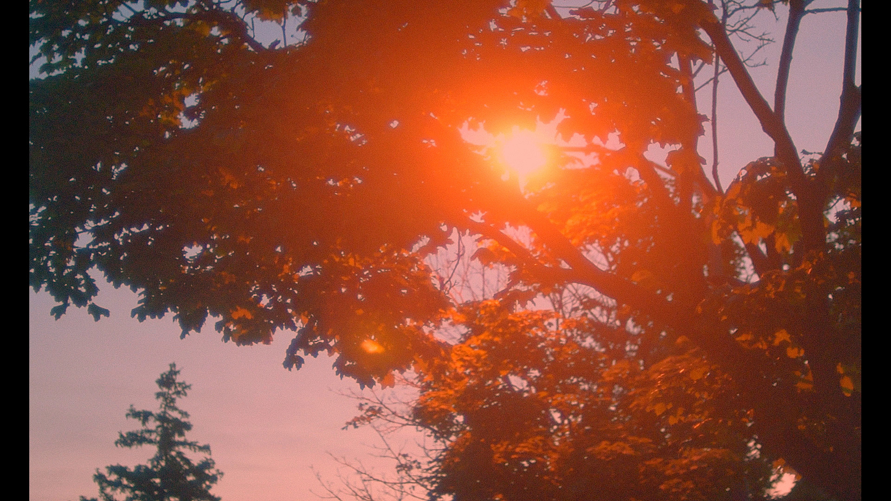
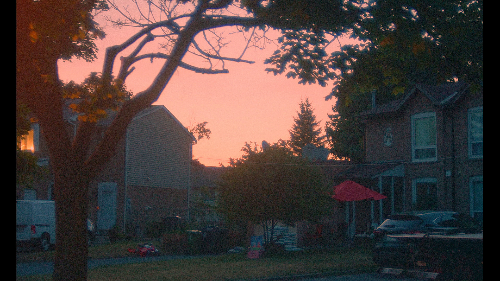
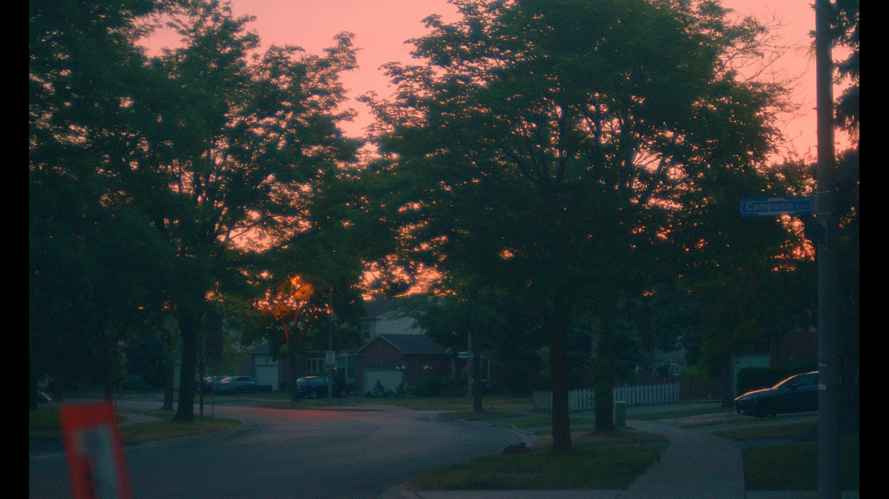
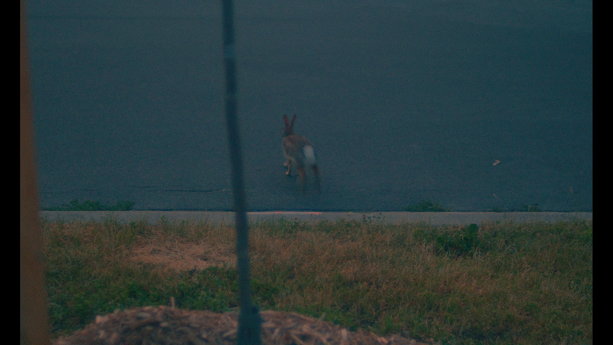
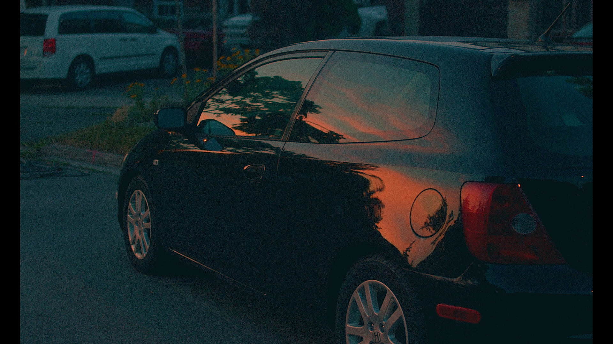
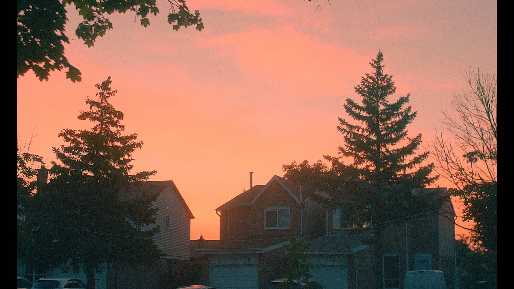

"Very short film acting as a rudimentary colour grade test where I try to emulate the look of analog film."
(Taken from YouTube video description.)
I wasn't originally planning on creating this short film on the day that I went outside; my original plan was to take some photos of the NEOWISE comet that popped up recently. Unfortunately, some clouds had formed and I
wasn't able to do that. (The satellite forecasts specifically stated that it was going to be a clear morning but wrong weather forecasts are nothing new I guess.) Fortunately, the clouds did help with making the sky look really
nice before the run rose so that was a cool experience. I think being outside for this sunrise really cemented my opinion that sunrises tend to provide more interesting light than sunsets, particularly when the air's moist and
everything becomes misty which diffuses the sunlight in a really nice way. (The air was fairly dry when was I outside though.) In the end, I think it was worth the hassle of getting up at 3:45 AM.
Gear used for this film: Nikon D3300 + Nikkor 35mm f/1.4 AI-S
Edited with Shotcut 20.04.12.








© Trevor Li 2019 - 2021, all rights reserved. All images taken by Trevor Li unless noted.